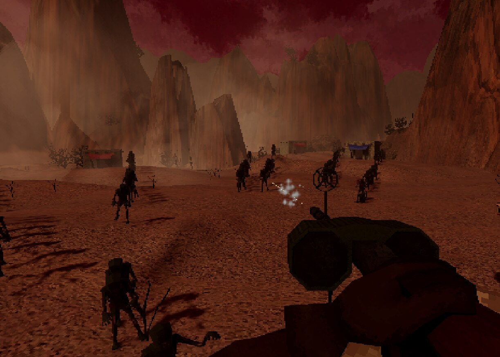
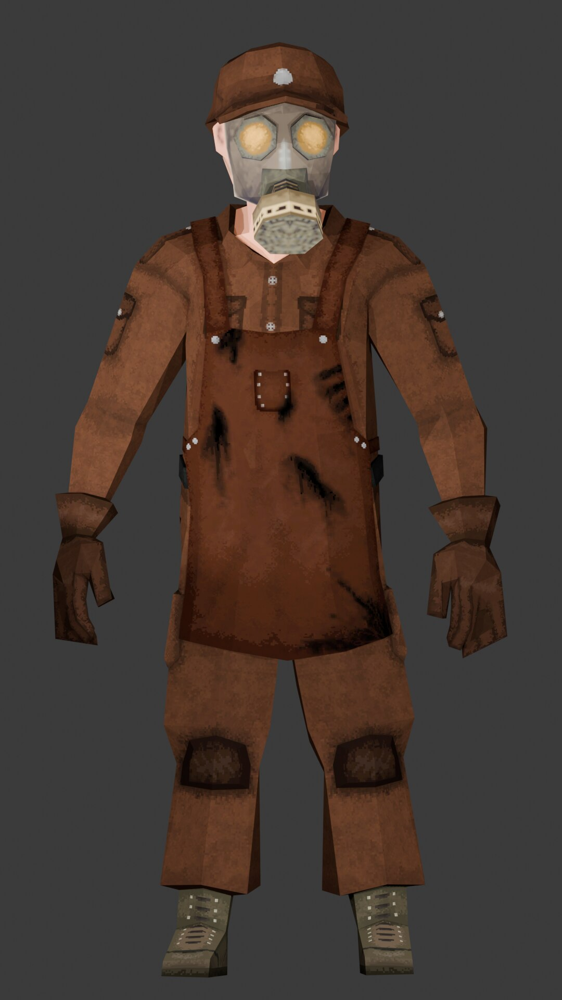
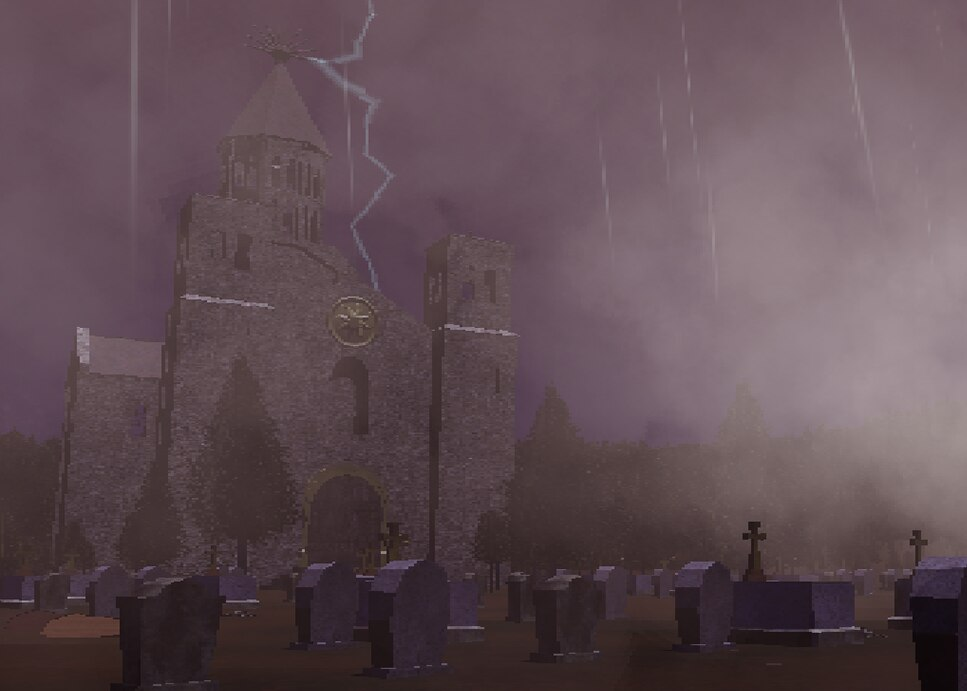
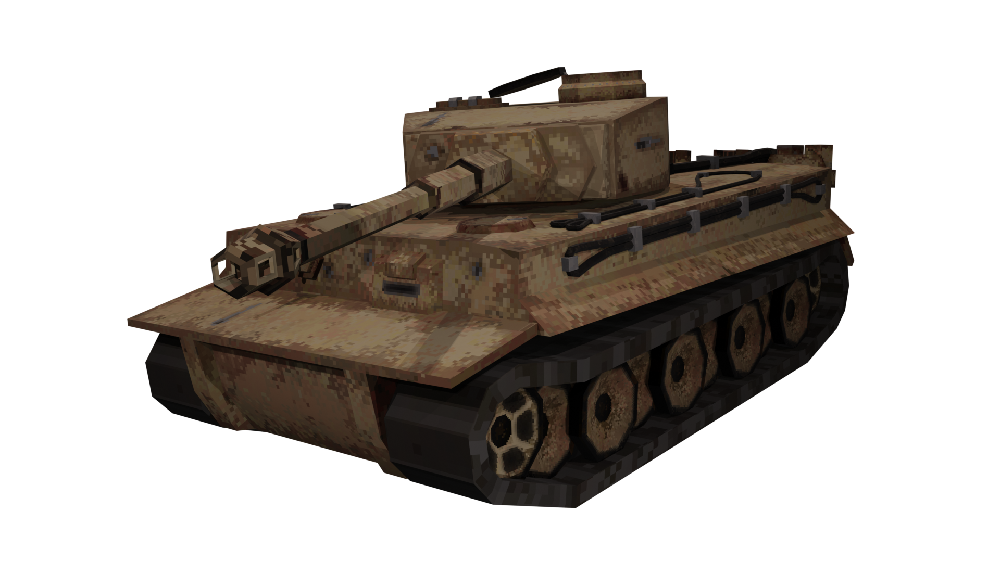
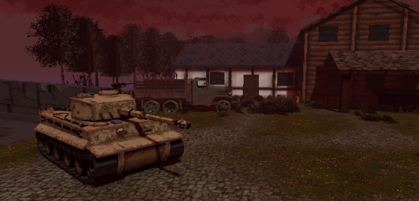

The Last Gunner: No Way Out
The Last Gunner: No Way Out is a wave-based survival shooter built in Unity 6, developed with a five-person team for PC and Meta Quest. Set during an alternate WWII overrun by a gas-mutated infection, the player is welded to the turret of a tank disabled by an anti-tank mine, defending it alongside Anatolij, a young mechanic sent out on supply runs between waves. The player is stationary and can only rotate, a deliberate constraint that also keeps camera movement VR-comfort safe, while resources scavenged by the mechanic feed a crafting system that keeps both of them alive as the horde scales up indefinitely. The goal each run is simple: survive as many waves as possible and climb the local leaderboard on score, kills and round reached.
Core features:
- Wave-based survival loop that scales indefinitely, with no hard difficulty cap
- An AI companion (Anatolij, the mechanic) who scavenges, can be grabbed by the horde and rescued, and mans a defensive gun
- A crafting system that turns scavenged materials into buffs and turret upgrades
- Four enemy archetypes, each built around a distinct combat read
- Full PC and VR support from a shared turret-combat core
Role in the project
Across the five-person team I acted as the project's VR lead, audio lead and art director, modeling and texturing the main assets and handling most of their in-engine integration myself alongside the rest of the team. Day to day, that meant:
- Art direction
- VR implementation
- 3D modeling & texturing of principal assets
- Sound design and Audio system architecture (FMOD)
- Narrative writing
Core loop & turret combat
The core loop runs through a single ITurretController interface shared by PC and VR, so both platforms drive the same combat logic without diverging balance. I implemented the VR side of it. I also modeled and textured the turret's machine gun, based on the MG34 with a double-drum magazine, a choice I made specifically to justify the 75-round capacity historically without needing a belt-fed reload in VR, and built the scoring rules, reading hit location off each enemy's hitbox to reward headshots and distance over point-blank body shots.
NPC companion & AI
Anatolij, the mechanic, scavenges on his own, returns automatically or on command, and hands off whatever he picked up to the player's inventory. While outside he can be grabbed by the horde, triggering a timed rescue event the player has to resolve by shooting the attacker without hitting him. I built his defensive role back inside the tank (the automated machine gun he mans at the front of the vehicle) and wrote the five scripted dialogue beats the two characters trade over a run to carry the narrative without cutscenes.
Crafting & survival economy
Scavenged materials feed a crafting system built around scriptable-object recipes, combining two dropped items into a buff for the mechanic (bandages, plated armor, stimulants) or the turret (ammo, damage rounds, faster reloads), gated to only work while the mechanic is inside the tank. A run's score also converts into currency for a progression shop between matches. My contribution here was on the audio side: the FMOD feedback for crafting actions, mixed into the same bus setup as the rest of the game.
Enemies & infinite waves
Four enemy archetypes, each built around a distinct combat read: the slow Farmer whose pitchfork punishes the mechanic, the Crawler that climbs onto the tank to steal loot before fleeing, the Bloated zombie whose pustules detonate into an area attack, and the Spore zombie that heals nearby enemies. I modeled and textured all four, including the Farmer's pitchfork and hat props, and handled most of their in-engine setup myself, while the team built the NavMesh-driven AI and horde-scaling logic on top.
VR interaction & audio
The VR implementation and audio system were mine end to end. I built the dual-grab drum magazine with a physically driven reload handle and matching recoil feedback, extending the XR Interaction Toolkit myself to support offset grabs and drop-height adjustment, neither of which it handles out of the box. On the audio side I architected the whole FMOD setup: independent buses/VCAs for master, ambience and zombie SFX, mixed to keep dozens of simultaneous spatialized enemy and environment sounds legible through the same bus graph.
Gallery




